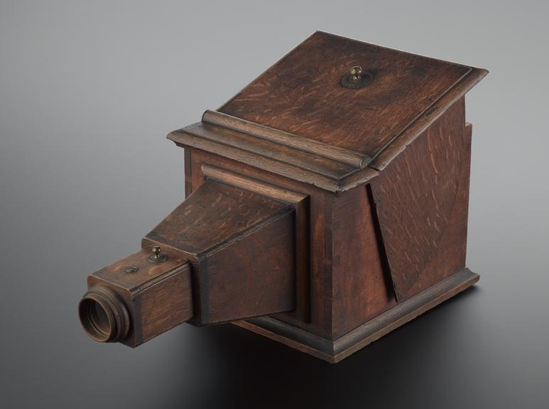
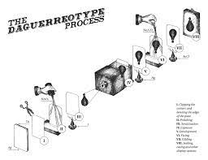

Aristotle used the principles of a camera obscura in 4th century BC‚ where an image is projected through a small hole. However‚ a scientist named Alhazen (or Ibn al-Haytham) is said to have actually invented the camera obscura and pinole camera through his extensive study of how images are formed by light. Although the camera was revolutionary:
|
 |
On the other hand‚ its size lead to many observatories being set up for groups to look at pictures through the camera and was later refined to add a lens to focus light and made smaller and more portable.
Joseph Nicéphore Niépce and Louis Jacques Mandé Daguerre created the basis for the cameras we are familiar with today. Joseph Niépce experimented with silver chloride and silver halide but the recorded images darkened with light. In 1862‚ he used a sheet of pewter coated with bitumen which needed to be exposed for 8 hours.
Louis Daguerre‚ a painter‚ refined the image-creating process with silver-plate sheets of copper fumed with mercury vapor. By 1939‚ Daguerre reduced exposure time to mere seconds sbco; which meant that this camera model was used for commercial portraits. Willam Henry Fox invented the calotype process a few years later‚ allowing photographers to create negatives where multiple prints could be created. In 1851‚ Frederick Scott Archer invented the collodion wet plate process, which created a negative image on a transparent glass plate and was used for tintype portraits until around the 1900s. The gelatin dry plate process was introduced in the late 1800s and was used more often afterwards.

In 1889‚ George Eastman created the roll of film‚ allowing people to consecutively shoot multiple pictures. His company Kodak allowed snapshots to be made and there wasn’t a need to individually process each picture. Thomas Edison added the 35mm format and Oskar Barnack introduced the compact Leica camera with 35 mm film.
Kodak then released Kodachrome with multiple layers that created colour film. When World War II started in 1939‚ photojournalists used the new lens to capture the realities of war instead of creating staged pictures.

Around this time‚ Polaroid introduced instant images‚ but stopped producing their instant film in 2008. Asahi (later Pentax) introduced the Asahiflex and Nikon introduced the Nikon F camera‚ which are SLR cameras‚ in the 1950s. SLR cameras are single-lens reflex cameras that use a mirror and prism system so that the user can see what they’re going to take a picture of. This allowed interchangeable lenses and other customizations to be made.
From the 1950s to the early ‘80s‚ cameras that could calculate shutter speed‚ aperture‚ and focus were created and what was considered the first self-contained digital camera was made by Kodak in 1975. By 1991‚ Kodak created the first fully digital camera that was good enough for professional use and other manufacturers started introducing advanced digital(DSLR) cameras.
To browse other pages on this site, go to the → top!